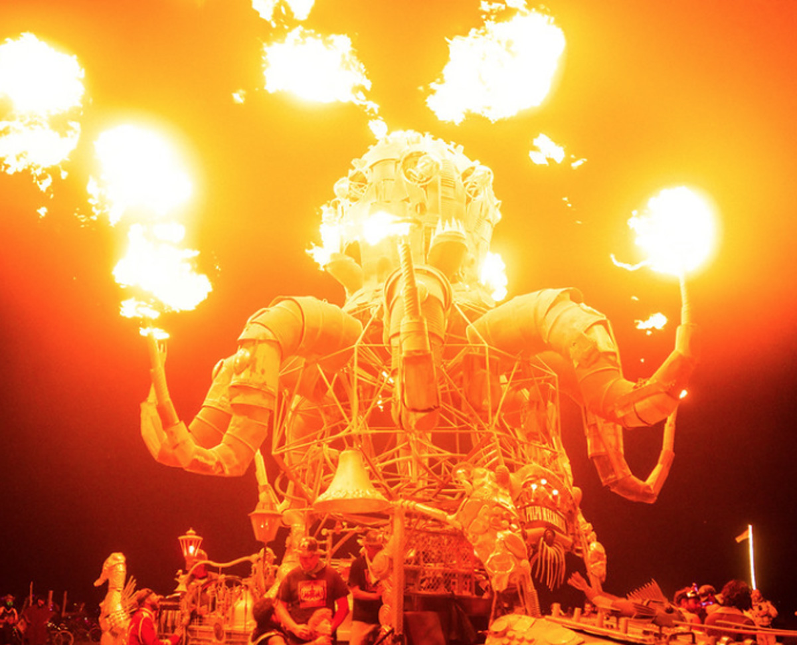
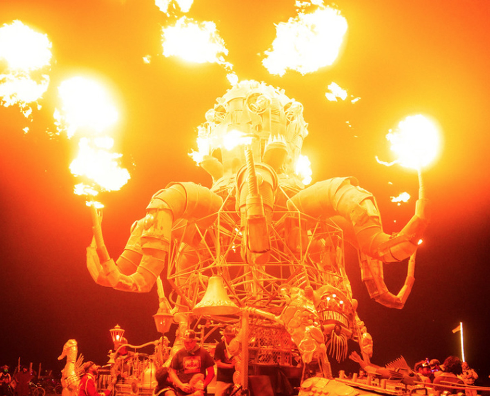
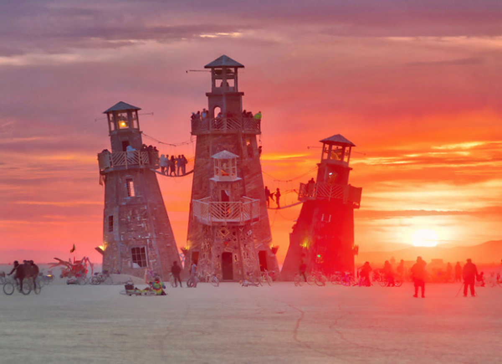
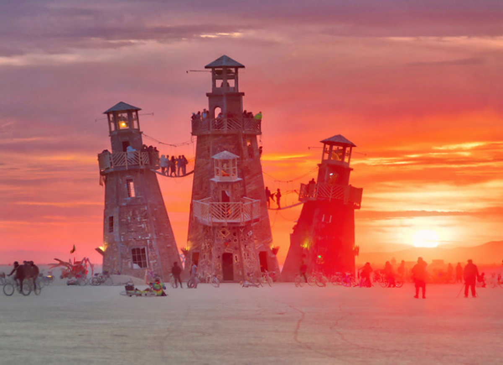

SACREM FACERE
Beyond the dogmas, creeds, and metaphysical ideas of religion, there is immediate experience. It is from this primal world that living faith arises. In 2017, we will invite participants to create interactive rites, ritual processions, elaborate images, shrines, icons, temples, and visions. Our art theme in 2017 is Radical Ritual. This leads to an obvious question: Just what is so radical about ritual? The word radical occurs three times in the Ten Principles, and most people regard this as referring to a breaking of boundaries and a shedding of restrictions. But radical has a second meaning: It refers to all that is fixed and fundamental in human nature.This set the stage for the Temple Burn in 2016. This temple, choked with hundreds of remembrances of the dead, was being quietly readied for burning, when a series of unrehearsed actions occurred. The crowd, numbering in the thousands, had gathered around the burn perimeter, when suddenly a sound arose, a sort of treble yipping, like the keening of coyotes; it traveled twice around the circle in a wave. Then a second wave of sound arose, this time pitched in a more dulcet tone, and rippled round the Temple three full times before subsiding into silence.
 

 
